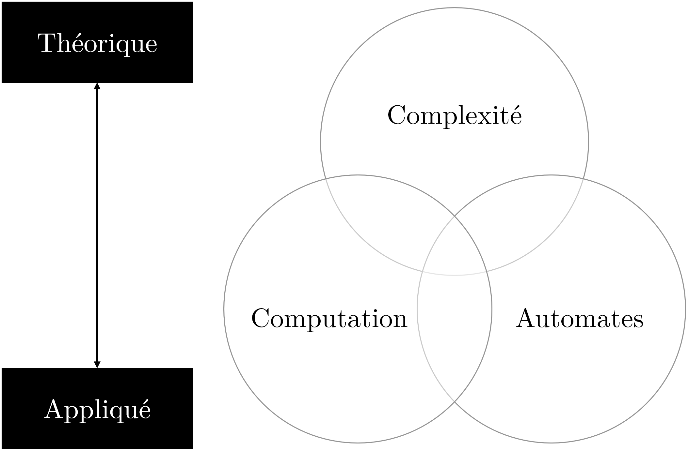

Computation avec JavaScript
en construction
Mattia A. Fritz
TECFA, Université de Genève
Pourquoi ?
— Hamming, 1962
Dans une application interactive
Définition de computation
— Adapté de Wikipedia anglais
Théorie de la computation
Théorie de la computation
-
Théorie de la complexité
Pourquoi des problèmes sont plus simples à résoudre et d'autres plus difficiles ? -
Théorie de la computation
Pourquoi des problèmes ont une solution algorithmique et d'autres pas? -
Théorie des automates
Comment faire ainsi que des agents contribuent à l'exécution d'algorithmes ?
Agents computationnels
Il existe plusieurs typologies d'agents
Robots ou automates avec récepteurs et actionneurs
Dispositifs et objects connectés (IoT)
Langage de programmation avec compilateurs ou interpréteurs
Langage de programmation
Utiliser une notation conventionnelle destinée à formuler des algorithmes et produire des programmes informatiques qui les appliquent.
-
Éléments littéraux
L'élément représente soi-même, par exemple un chiffre, le nom d'une personne, etc. -
Éléments symboliques
L'élément représente quelque chose d'autre, qu'on peut par exemple manier ou transformer
let name = "My name is Bond, James Bond"Éléments littéraux
Les éléments littéraux peuvent être de différents types, qu'on peut
connaître à travers la commande typeof dans la console
F12. Parmi les plus utilisés figurent :
// Éléments numériques
typeof 100
typeof 3.14
// Éléments textuels/suites de caractères
typeof "Hello"
typeof 'Ajourd\'hui j\'apprends JavaScript'
typeof "1234567890"
// Éléments logiques
typeof true
typeof false
// Éléments spéciaux
typeof undefined
typeof null
Éléments symboliques
Les éléments symboliques d'un bout de code informatique se divisent en deux types :
-
Éléments symboliques conventionnels
Il s'agit de mots réservés par le langage qui sont déjà associés à un rôle ou une fonction spécifiques. Par exemple:
let, if, function, while, do, typeof, Math.PI, Math.random(), ... -
Éléments symboliques arbitraires/personnalisés
Il s'agit du code qui est écrit spécifiquement pour accomplir les intentions du développeur, qui peut créer ses propres éléments (e.g. variables et fonctions). Par exemple :
giveStudentFeedback(), shuffleMemoryCards(), checkAnswer(), ...
Computation des lettres
Pour aller plus loin
Les concepts abordés dans cette présentation sont traités de manière plus exhaustive dans un article sur EduTechWiki.
EduTechWiki est un wiki sur la technologie éducative hébergé est maintenu par TECFA, une unité de l'Université de Genève, depuis 2006.